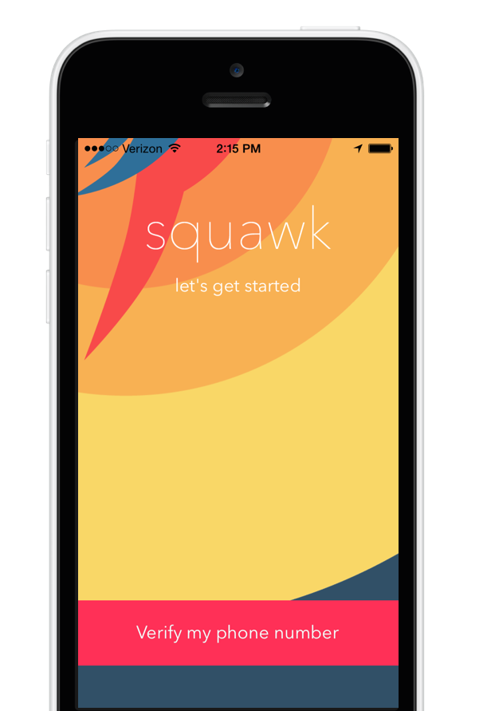

A voice message is better than a text. And now it's easier, too.
To record a Squawk, tap a person's name, and then lift your iPhone to your ear. Put it down and the message is sent. When you've got a Squawk to listen to, the app turns blue—you can listen to it the same way.
Squawk uses your phone number and your contacts. There's no need to sign up or exchange usernames.
